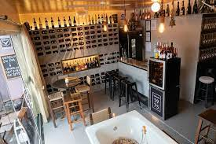

Uma pequena vinheria familiar no interior cresceu ao longo do tempo, mantendo a tradição de produzir vinhos de qualidade, experimentando novas técnicas de produção e recebendo prêmios em concursos locais e nacionais. Com o sucesso, a família expandiu os negócios, investiu em tecnologia e infraestrutura, distribuindo seus vinhos para outras cidades e estados do país. Somos uma vinheria que se destaca pela excelência no atendimento e pela qualidade dos nossos produtos. Nossos atendentes são especializados em vinhos e estão prontos para oferecer as melhores recomendações para cada ocasião. Nosso compromisso é proporcionar uma experiência única para os nossos clientes, oferecendo uma seleção cuidadosamente escolhida de vinhos de alta qualidade de diversas regiões do mundo. Seja para uma ocasião especial ou para o dia a dia, estamos sempre prontos para atender e surpreender os nossos clientes. Venha nos conhecer e descubra o que faz da nossa vinheria um lugar especial. Além disso, valorizamos o conhecimento e a cultura do vinho e estamos sempre em busca de novidades e tendências no mercado. Nossos clientes podem contar conosco não só para adquirir vinhos de qualidade, mas também para aprender sobre a história e as características de cada rótulo. Nosso objetivo é tornar a experiência de degustar um vinho ainda mais enriquecedora e prazerosa. Venha nos visitar e faça parte da nossa história.
